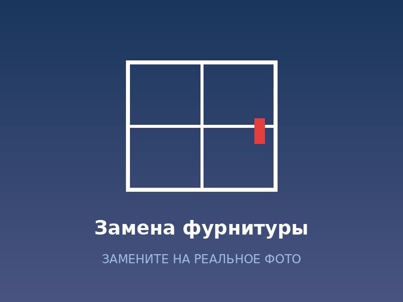
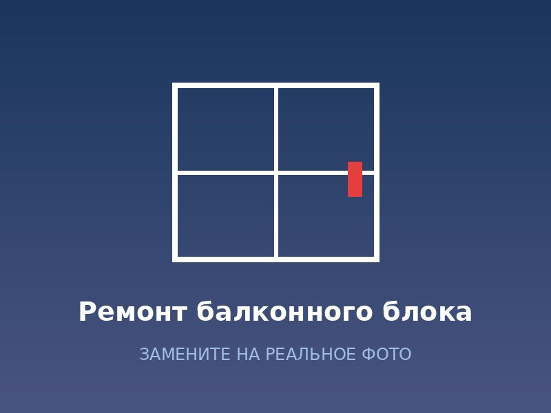
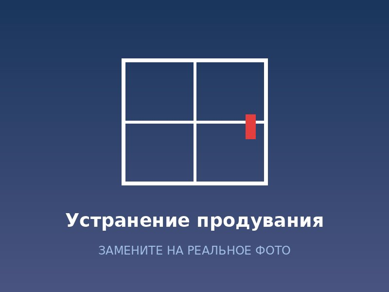
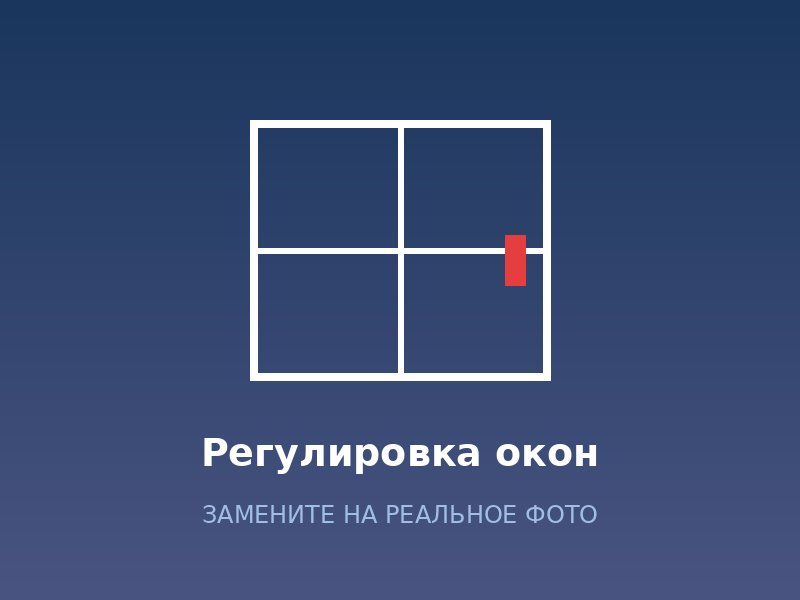
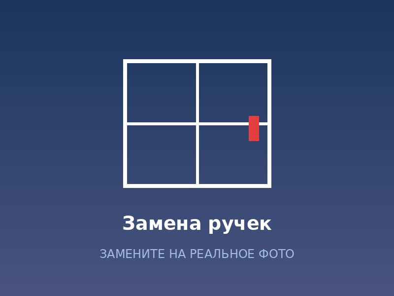

Наши выполненные работы

Замена фурнитуры, Приморский р-н

Ремонт балконного блока, Центр

Замена стеклопакета, Московский р-н

Устранение продувания, Невский р-н

Регулировка окон, Красносельский р-н

Замена ручек, Выборгский р-н